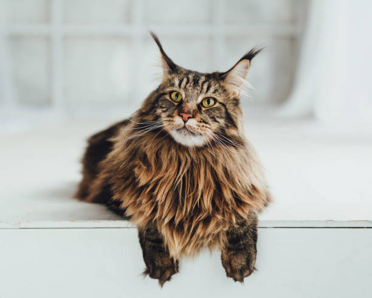
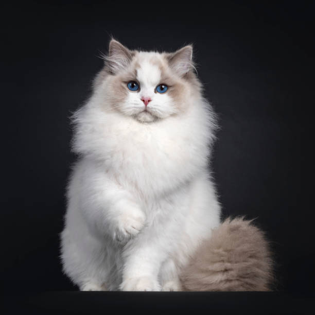
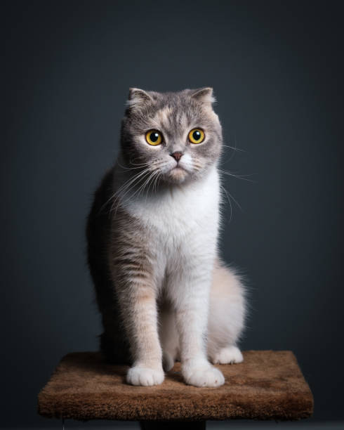
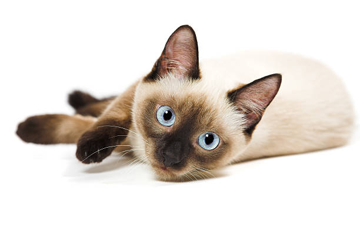
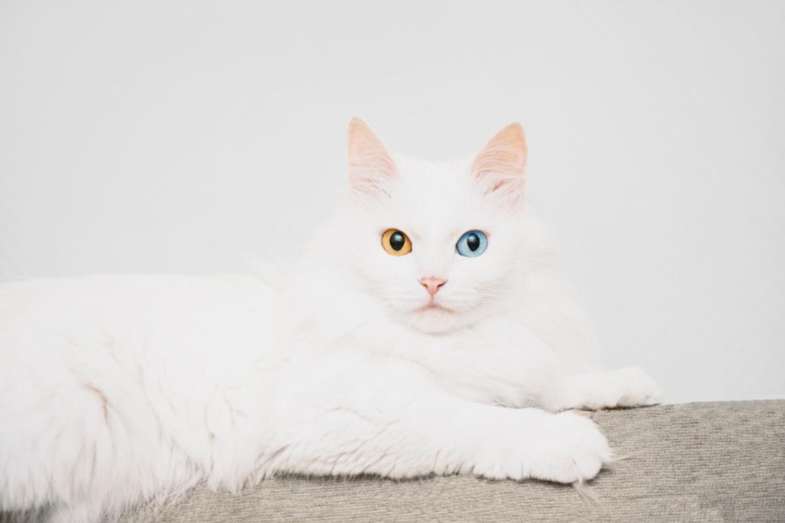
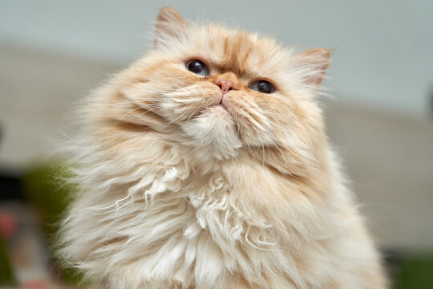

El café donde los gatitos son los dueños
Ven a relajarte, tomar un buen café y hacer nuevos amigos peludos.
Ubicados en la Condesa, CDMX.
Cada uno tiene su propia personalidad. ¡Seguro habrá uno que sea tu favorito!

Edad: 2 años
Raza: Maine Coon
Carácter: Muy cariñosa y curiosa. Le encanta seguirte por todo el café.

Edad: 4 años
Raza: Ragdoll
Carácter: Tranquilo y zen. Se pasa horas mirando por la ventana.

Edad: 1 año
Raza: Scottish Fold
Carácter: La bebé del café. Traviesa y muy energética.

Edad: 6 años
Raza: Siamés
Carácter: El más sabio. Selectivo pero muy leal con quien le gana la confianza.

Edad: 3 años
Raza: Angora Turco
Carácter: Elegante e independiente. Sabe que es la más guapa del café.

Edad: 5 años
Raza: Persa
Carácter: Cara de enojado pero el más abrazable. Ronronea muy fuerte.
Estamos esperándote con café caliente y muchos ronroneos.
📍 Calle Ámsterdam 42, Condesa, CDMX
🕐 Lun–Vie: 9:00 – 21:00 | Sáb–Dom: 10:00 – 22:00
📞 55 1234 5678
📸 @NekoNookCDMX